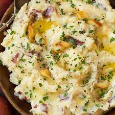

Roasted Garlic Mashed Potatoes

Description
These garlicky mashed potatoes, made with olive oil rosemary and thyme, are a delicious compliment to your thanksgiving dinner.
Ingredients
Roasted Garlic
- 1 whole garlic bulb
- Extra virgin olive oil
- Sea salt
Mashed Potatoes
- 2 pounds of Yukon Gold or Butterball potatoes, peeled
- 2 tsp sea salt, divided
- 1/3 cup extra virgin olive oil
- Ground black pepper
- Butter for serving
- Chopped chives and/or rosemary for sprinkling
Steps
- Preheat the oven to 350°F.
- Make the roasted garlic: Trim the top ¼ inch off the top of the garlic bulb. Place cut-side up on a piece of foil, drizzle with olive oil, and sprinkle with salt. Wrap the garlic in the foil and roast for 40 to 60 minutes or until the cloves are deeply golden brown and tender. Remove from the oven and let cool slightly. Use the back of a chef’s knife or a small masher to mash the garlic into a paste before incorporating into the mashed potatoes. Set aside.
- Make the mashed potatoes: Place the potatoes and 1 teaspoon of salt in a large pot and fill with enough water to cover the potatoes by 1 inch. Bring to a boil and cook until fork tender, about 20 minutes. Drain, reserving 1 cup of the cooking liquid.
- Use a ricer or a potato masher to mash the potatoes into a large bowl. Use a rubber spatula to fold in the roasted garlic, olive oil, ½ cup of the reserved cooking liquid, 1 teaspoon salt, and several pinches of pepper. Continue folding until creamy, adding up to ½ cup more cooking liquid if desired for creamier potatoes. Serve hot with butter, rosemary, and chives, if desired.